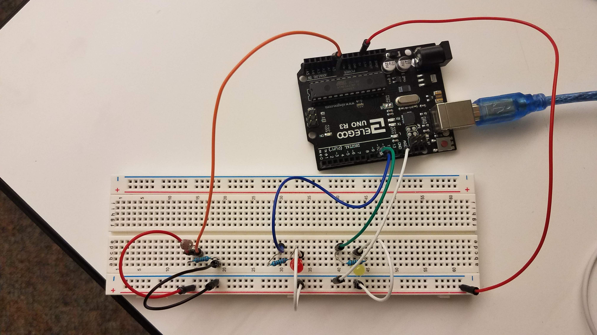
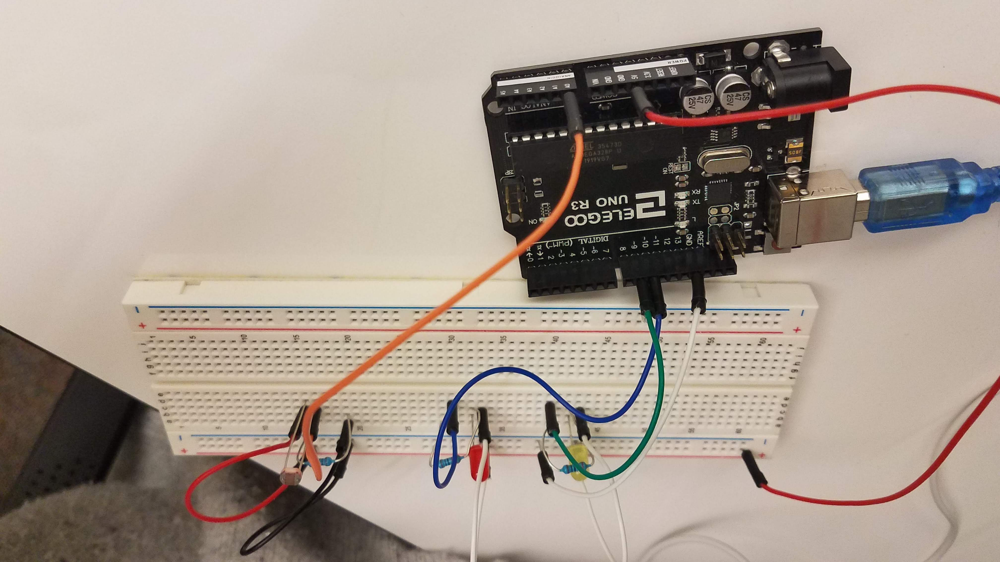
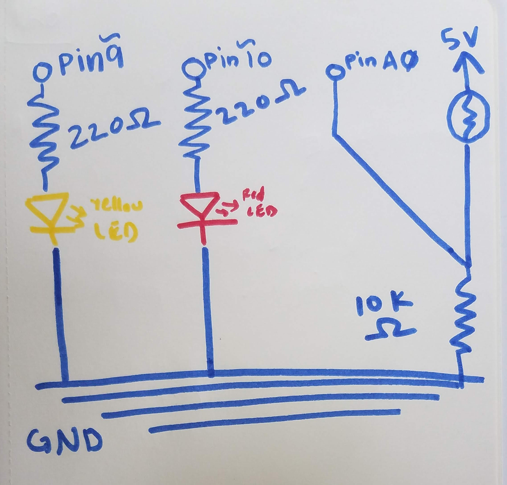
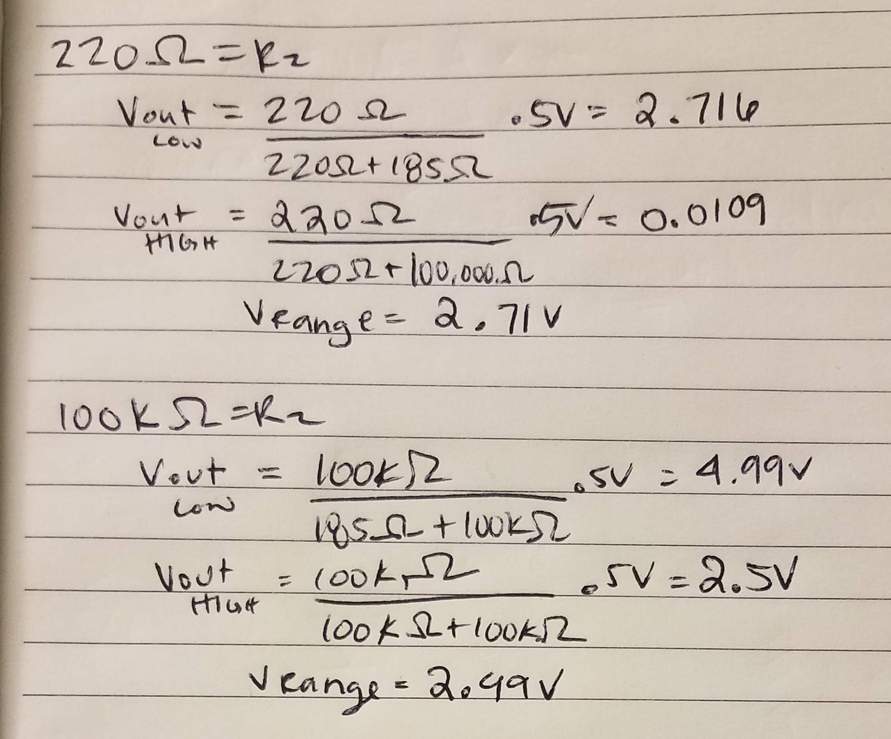
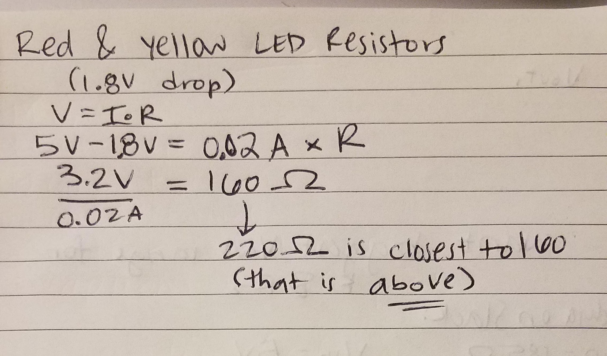

Lily's Assignment 3!
Here is all the documentation for assignment 3!

At different levels of light being read by the photoresistor, different things happen to the LEDs. For bright light, like from overhead fluorescents, the red LED blinks slowly, on and off for 400 milliseconds each. As the light reaching the photoresistor lessens, like when I cast a shadow over it with my hand, the blinking goes faster, at 150 milliseconds each on and off. When the photoresistor is in darkness, like when I covered it with my hand, the blinking is very rapid, blinking on and off for 75 milliseconds each.
The yellow LED does not blink; rather, it gets brighter or dimmer along with the exposure or shielding from light, respectively.

This image shows my circuit, which has two LEDs and a photoresistor. The LEDs have to be connected
to the pins with tildes (~) because these are the pins that allow for analogWrite()to write the
analog value measured by the photoresistor to the pin.


Here is my schematic. I learned the symbol for the photoresistor from electronics-notes.com.

To find the resistor value to use with the photoresistor, I had to do some calculations using the min and max resistance of the photoresistor, depending on the amount of light it is exposed to. I used the multimeter to get the max and min values, measuring when the lights were on, and when the room was dark. These are the values I read:
Rmin: 185 ohms
Rmax: 100k ohms
Then, I looked for the resistor that would allow analogRead() to read the widest range of values possible at the voltage divider. If the photoresistor were capturing the whole range, the readings would go from 0-1023 (a full 5 volt range); mine only went from about 30 to 900, that's why Iconstrained my range to those values in my void loop.
Next, I calculated the Vout values for both the low and high resistance values; then, I subtracted Vout_low from Vout_high to get the voltage range; I checked for 220 ohms, and the range was pretty small, so I went up to 100k ohms, and the range was also small. Then, I went down to 2k ohms and the range was 4.47V. I did the calculation for 10k ohms, and the range was slightly smaller than the 2k resistor, at 4.45V.
Even though the 10k resistor had a range that was a tiny bit smaller, I chose that resistor because I figured using a higher resitor would be a safer bet, and the tiny difference in voltage range between 10k and 2k would not make a visible difference.

There are my calculations for the 2k and 10k ohm resistors.

Here is my code for this assignment:
// HW 3 - HCDE 439
// I gave the constants in my circuit names, so I could make my code more readable,
// and know which pin I was assigning something to
const int photoPin = A0; //the photoresistor is attached to pin A0
const int yellowLED = 9; // The yellow LED is attached to analog output pin 9
const int redLED = 10; // The red LED is attached to analog output Pin 10
// this is the value given to the photoresistor based on analogRead
int sensValue = 0;
// this is the value from the photoresistor I will change using the
// map function to change from the range of the photoresistor to the range the LED can use
int outputValue = 0;
// value from photoresistor that will be constrained
// (I rename sensValue into this variable after I constrain it)
int sensorValue = 0;
void setup() {
// Initialize serial communications
// This is so I can later see the values in the serial monitor
Serial.begin(9600);
// Here, I initialize the photoresistor as the input
pinMode(photoPin, INPUT);
//initialize the red LEd pin as output so I can use analogWrite() with it
pinMode(redLED, OUTPUT);
// initialize the red LEd pin as output so I can use analogWrite() with it
pinMode(yellowLED, OUTPUT);
}
void loop() {
// analogRead() grabs the voltage the photoresistor reads based on light input
sensValue = analogRead(photoPin);
// this limits the range of values read by photoresistor to between 30 and 900
sensorValue = constrain(sensValue, 30, 900);
// Next, I use the map() function to transpose the range from 0-1023 to 0-200 because
// it makes small changes in light input more dramatic
// I changed the fromLow value to 30 because I wanted the LED to turn off
// when it got to 30 (near the lowest reading from my serial monitor)
outputValue = map(sensorValue, 30, 900, 0, 200);
// change the analog out value:
// The yellow LED simply is on all the time, and changes its brightness
// as the photoresistor is exposex to more/less light
analogWrite(yellowLED, outputValue);
// The red LED blinks at various rates depending on the light exposure
// if the value read by the photoresistor is less than 75 (mapped value)
// the red LED will blink fast
// This is very dark - if I cover the photoresistor completely with my hand
// or am in a dark room
if (outputValue < 75) {
// red LED is turned on
digitalWrite(redLED, HIGH);
// wait 75 milliseconds
delay(75);
// red LED is turned off
digitalWrite(redLED, LOW);
// wait 75 milliseconds
delay(75);
// if the value read by the photoresistor is between 75 and 134 (mapped values)
// the red LED will blink at a medium rate
// This is if I cast a shadow over the photoresistor with my hand
} else if (outputValue >= 75 && outputValue < 135) {
// red LED is turned on
digitalWrite(redLED, HIGH);
// wait 150 milliseconds
delay(150);
// red LED is turned off
digitalWrite(redLED, LOW);
// wait 150 milliseconds
delay(150);
// If the value read by the photoresistor is 135 or higher (mapped values)
// the red will blink slowly
// this is if the photoresistor is exposed to light
} else {
// red LED is turned on
digitalWrite(redLED, HIGH);
// wait 400 milliseconds
delay(400);
// red LED is turned off
digitalWrite(redLED, LOW);
// wait 400 milliseconds
delay(400);
}
// this prints the results to the Serial Monitor
// this helped me determine how to onstrain and map my photoresistor sensor values
Serial.print("sensor = ");
// writes the original sensor input value
Serial.print(sensorValue);
// writes the text in the print statement, makes the serial monitor more coherent
Serial.print("\t output = ");
// prints the value after is has been mapped to a new range
Serial.println(outputValue);
// delays 2 milliseconds before the next loop starts
delay(2);
}